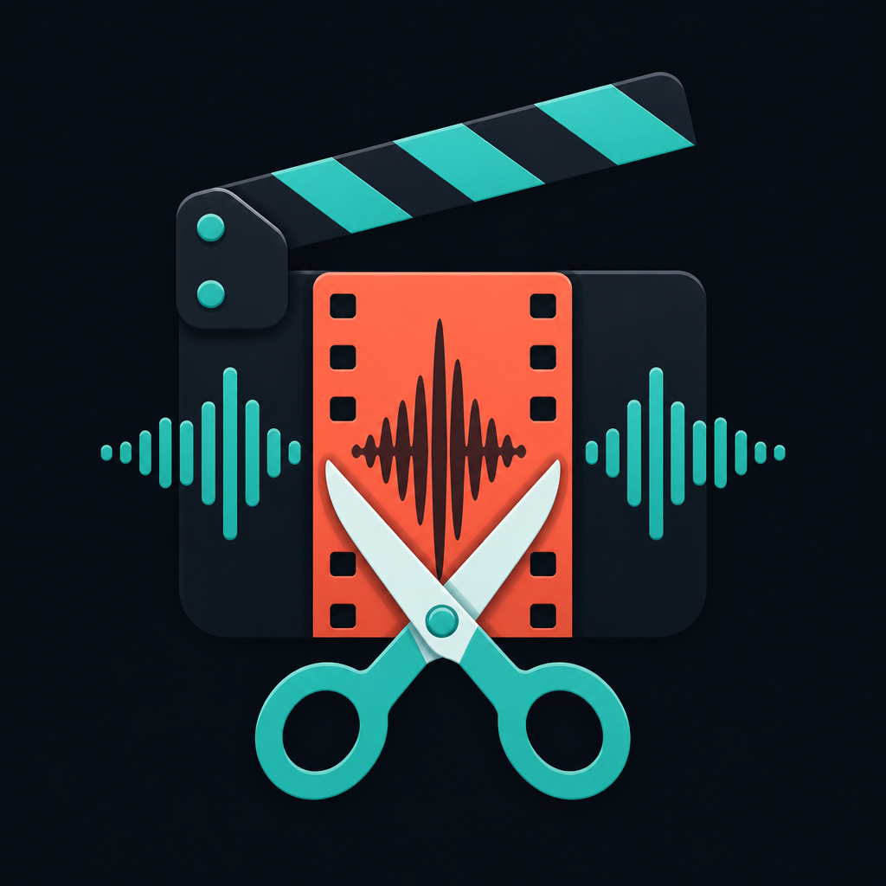

A Windows desktop product for musicians and creators. ClipMaker finds the strongest 20–60 second section of a track, combines it with cover art or video, and prepares a vertical clip for YouTube Shorts and TikTok. Publishing uses the creator’s own Google/YouTube or TikTok account — ClipMaker never posts without an explicit click.
End-to-end flow on the user’s Windows PC. Media stays local until the user chooses to publish.
ClipMaker uses TikTok for Developers products to let the signed-in creator authorize ClipMaker and upload a short video they just rendered. Products and scopes used:
user.info.basic
Opens the TikTok authorization page in the browser. After the user approves,
ClipMaker receives an OAuth code on http://127.0.0.1:8765/callback/
and stores tokens locally so the same creator can publish later without logging in every time.
video.upload · video.publish
video.upload sends the rendered MP4 to the creator’s TikTok inbox as a draft. video.publish posts directly with caption (Sandbox: private / SELF_ONLY until the app is approved). The user chooses the mode in the ClipMaker UI and must click Publish.
ClipMaker is distributed as a Windows desktop application for creators who already produce music locally. Source and releases are maintained on GitHub.
No. Connecting TikTok/YouTube only stores OAuth tokens. Uploads happen only when the user presses Publish.
Media files stay on the user’s PC. OAuth tokens live under the user’s local AppData\ClipMaker folder. See the Privacy Policy.
No. ClipMaker is a Windows desktop app using TikTok Login Kit for Desktop and the Content Posting API.